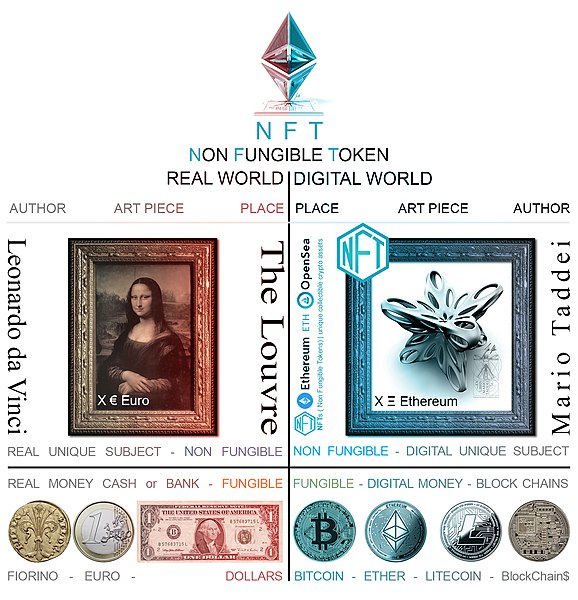

Aunque la aplicación más conocida del blockchain son las criptomonedas, eso es sólo una parte del futuro y presente de esta revolucionaria tecnología.
En el siguiente vídeo se resume lo que será El nuevo mundo que crea el ‘blockchain:
Aunque la aplicación más conocida del blockchain son las criptomonedas, eso es sólo una parte del futuro y presente de esta revolucionaria tecnología.
En el siguiente vídeo se resume lo que será El nuevo mundo que crea el ‘blockchain:
Una de las aplicaciones que más ha crecido últimamente ha sido la de los NFTs que aluden en inglés a token no fungible, que se refiere a un activo digital que no podrá consumirse ni sustituirse.
Token fungible (FT):
Token no fungible (NFT):

Puedes encontrar más información en el siguiente vídeo:
Al igual que se pueden almacenar de forma inmutable en la blockchain las transacciones de bitcoin, esta tecnología se puede utilizar para almacenar cualquier otro tipo de información, generando así un registro distribuido inalterable , mucho más seguro que las bases de datos tradicionales, que han de ser gestionadas por un tercero.
Lee y completa el siguiente listado con algunas de las aplicaciones que ya se están desarrollando.
Seguro que esta ha sido la parte más interesante hasta ahora. Hemos puesto en práctica parte de lo aprendido y hemos sido capaces de comprender muchas cosas de las que has oído hablar. Por eso es interesante que antes de continuar, nos paremos a pensar un poco sobre lo que hemos conseguido.
Puedes responder a estas preguntas o puedes hacerlas a un compañero o compañera a modo de entrevista.
Después de responder a estas preguntas, comenta con tus compañeros o compañeras tus respuestas en una puesta en común.
Uffs, ¿Cuántas cosas has aprendido?, pero ¿Qué interesante?¿verdad?
Es el momento de reflexiona un momento sobre todo lo que has aprendido hasta llegar aquí y completa el PASO 3 (Reviso lo aprendido) de tu Diario de aprendizaje antes de preparar la tarea final.
Recuerda una vez más:
¡Ánimo, a por el reto final!
Obra publicada con Licencia Creative Commons Reconocimiento No comercial Compartir igual 4.0